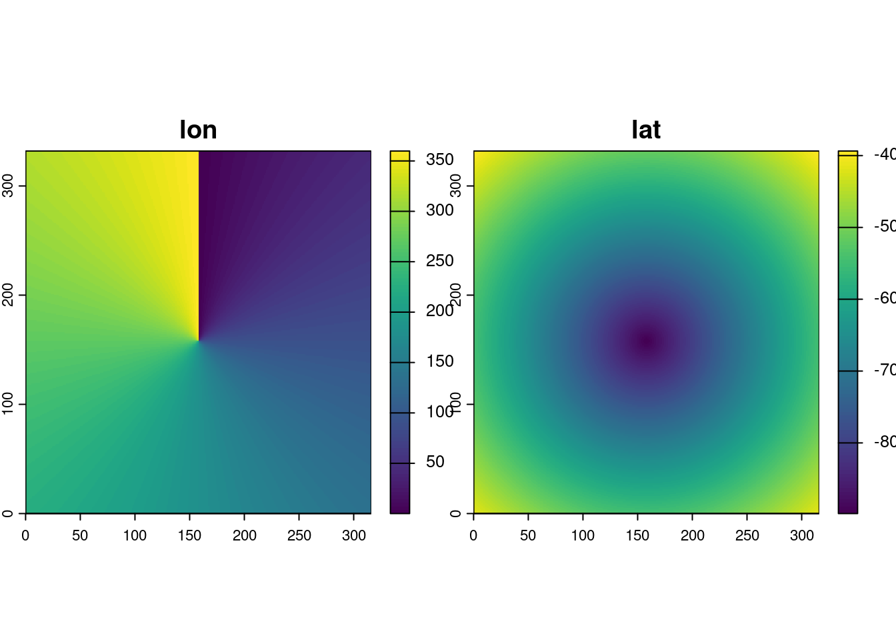
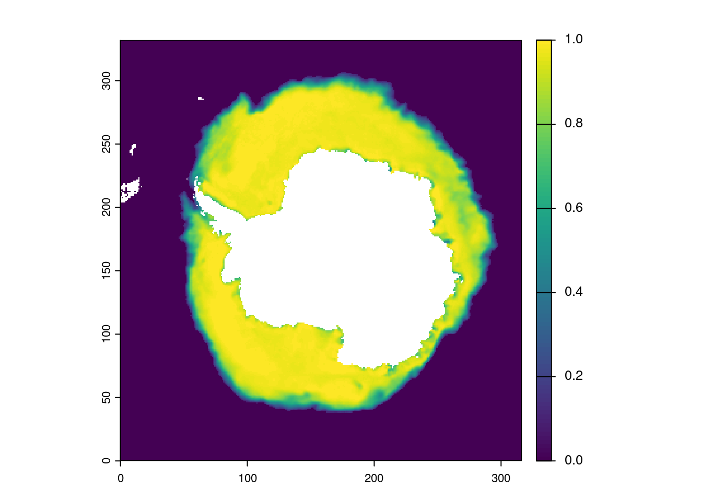
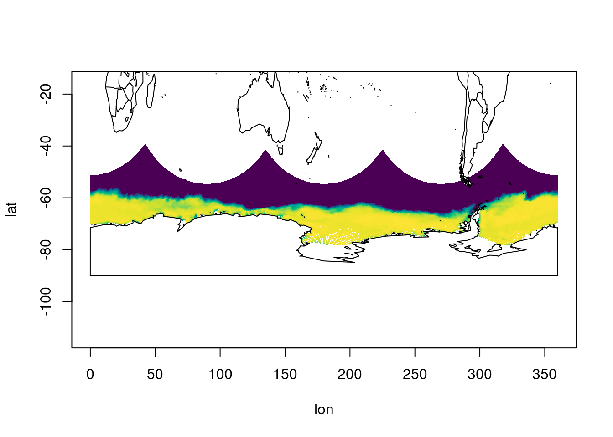
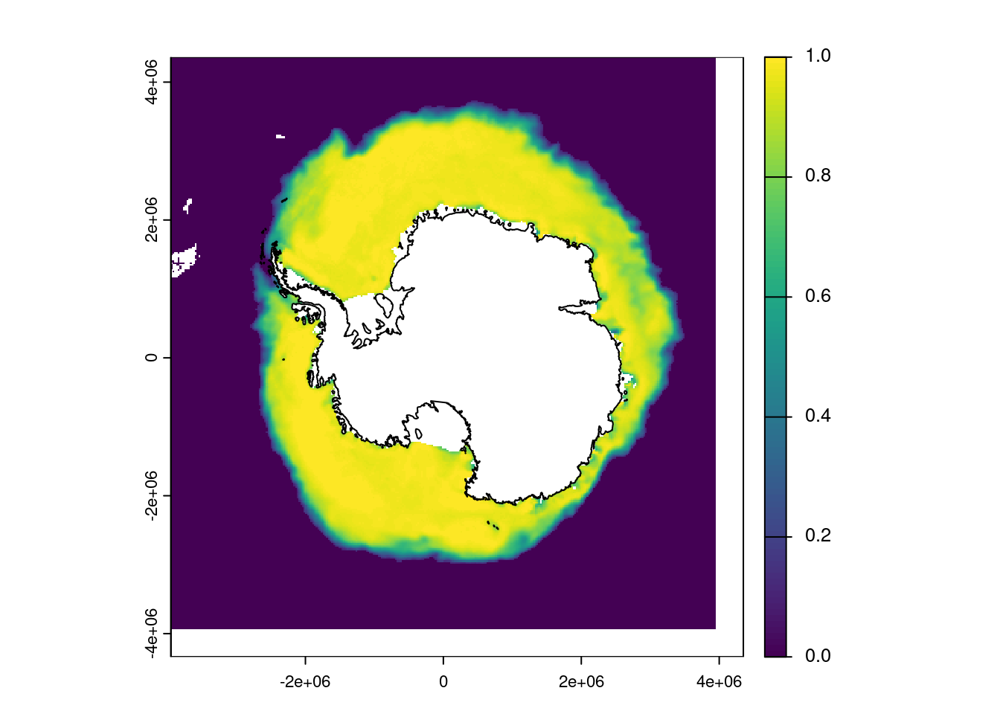

netcdf CS2WFA_25km_201007 {
dimensions:
y = 332 ;
x = 316 ;
time = 1 ;
variables:
float time(time) ;
time:long_name = "time" ;
time:units = "months since 2000-01-01" ;
time:calendar = "360_day" ;
double lat(y, x) ;
lat:long_name = "latitude" ;
lat:units = "degrees_north" ;
double lon(y, x) ;
lon:long_name = "longitude" ;
lon:units = "degrees_east" ;
...
double sea_ice_concentration(time, y, x) ;
sea_ice_concentration:least_significant_digit = 4LL ;
sea_ice_concentration:units = "1" ;
sea_ice_concentration:standard_name = "sea_ice_area_fraction" ;
sea_ice_concentration:description = "Mean sea ice concentration in grid cell, from Bootstrap V3 concentration algorithm (Comiso, 2017 https://doi.org/10.5067/7Q8HCCWS4I0R)" ;
// global attributes:
:title = "Antarctic sea ice physical properties obtained from CryoSat-2 using the CS2WFA algorithm" ;
:institution = "NASA GSFC Cryospheric Sciences Laboratory and University of Maryland-College Park" ;
:history = "File created on November 15, 2022, 12:09:06" ;
group: sea_ice_thickness {
...
group: density {
variables:
double ice_density(time, y, x) ;
ice_density:least_significant_digit = 4LL ;
...
} // group density
}
There’s a root group with four variables defined in time,y,x and another two groups with further variables on that same grid.
Each data array is 316x332x1 and we can tell that every lon,lat pair is stored explicitly. This fits a convention in NetCDF where time is “unlimited” and we’re only looking at a subset of an overall time series, that could well be continually generated day to day still now.
Let’s investigate the coordinates. We’ll use GDAL via a commonly used wrapper in R, its ‘vsicurl’ protocol to stream from the internet, and declare the driver explicitly (lest we get the less sophisticated HDF5 interpretation).
Warning: [rast] GDAL did not find an extent. installing the ncdf4 package may
help
lat <-rast(dsn, "lat")
Warning: [rast] GDAL did not find an extent. installing the ncdf4 package may
help
plot(c(lon, lat))

We get a message from terra about “cells not equally spaced”, which means that when reading an array the geospatial context in GDAL didn’t find anything specifying a compact representation of coordinates, but lon and lat are the coordinatesas data, so we can safely ignore this message. (There’s another message about ncdf4, but ignore that too it’s terra try(ing) stuff. )
We won’t pay attention to “time”, because our file only has one time step. We’re interested in these lon,lat coordinates. What does the data itself look like? Again we choose one of the 3D variables (with degenerate 3rd dimension ‘time’) by name.
ice <-rast(dsn, "sea_ice_concentration")
Warning: [rast] GDAL did not find an extent. installing the ncdf4 package may
help
plot(ice)

That should look familiar, though notice that we don’t have any spatial information it’s just a matrix in its own index coordinates, 0,316 for x and 0,332 for y.
Let’s plot the coordinates. Now we can see our data in a much more spatial-ish context.
xyz <-values(c(lon, lat, ice))plot(xyz[,1:2], pch =".", col = palr::d_pal(xyz[,3]), asp =2)maps::map("world2", add =TRUE)

We now don’t have a nice gridded dataset, it’s points in longitude latitude. What can we do to plot it in that nice polar aspect with proper spatial referencing?
Let’s have a look at this dataset from a GDAL perspective. Now we use the API package gdalraster which gives a lot more control over GDAL itself. I’m going to skip over interrogating the syntax for a particular array, like we did with terra and ‘sea_ice_concentration’ above, I construct the subdataset syntax to open.
The following object is masked from 'package:terra':
rasterize
ds <-new(GDALRaster, sds)ds$info()
Driver: netCDF/Network Common Data Format
Files: ../CS2WFA_25km_201007.nc
Size is 316, 332
Metadata:
NC_GLOBAL#history=File created on November 15, 2022, 12:09:06
NC_GLOBAL#institution=NASA GSFC Cryospheric Sciences Laboratory and University of Maryland-College Park
NC_GLOBAL#title=Antarctic sea ice physical properties obtained from CryoSat-2 using the CS2WFA algorithm
NETCDF_DIM_EXTRA={time}
NETCDF_DIM_time_DEF={1,5}
NETCDF_DIM_time_VALUES=126
sea_ice_concentration#description=Mean sea ice concentration in grid cell, from Bootstrap V3 concentration algorithm (Comiso, 2017 https://doi.org/10.5067/7Q8HCCWS4I0R)
sea_ice_concentration#least_significant_digit=4
sea_ice_concentration#standard_name=sea_ice_area_fraction
sea_ice_concentration#units=1
time#calendar=360_day
time#long_name=time
time#units=months since 2000-01-01
Geolocation:
SRS=GEOGCS["WGS 84",DATUM["WGS_1984",SPHEROID["WGS 84",6378137,298.257223563,AUTHORITY["EPSG","7030"]],AUTHORITY["EPSG","6326"]],PRIMEM["Greenwich",0,AUTHORITY["EPSG","8901"]],UNIT["degree",0.0174532925199433,AUTHORITY["EPSG","9122"]],AXIS["Latitude",NORTH],AXIS["Longitude",EAST],AUTHORITY["EPSG","4326"]]
X_DATASET=NETCDF:"../CS2WFA_25km_201007.nc":lon
X_BAND=1
Y_DATASET=NETCDF:"../CS2WFA_25km_201007.nc":lat
Y_BAND=1
PIXEL_OFFSET=0
PIXEL_STEP=1
LINE_OFFSET=0
LINE_STEP=1
GEOREFERENCING_CONVENTION=PIXEL_CENTER
Corner Coordinates:
Upper Left ( 0.0, 0.0)
Lower Left ( 0.0, 332.0)
Upper Right ( 316.0, 0.0)
Lower Right ( 316.0, 332.0)
Center ( 158.0, 166.0)
Band 1 Block=316x332 Type=Float64, ColorInterp=Undefined
NoData Value=9.969209968386869e+36
Unit Type: 1
Metadata:
NETCDF_VARNAME=sea_ice_concentration
least_significant_digit=4
units=1
standard_name=sea_ice_area_fraction
description=Mean sea ice concentration in grid cell, from Bootstrap V3 concentration algorithm (Comiso, 2017 https://doi.org/10.5067/7Q8HCCWS4I0R)
NETCDF_DIM_time=126
The interesting part of that output is under “Geolocation:”. We can see that while GDAL doesn’t have spatial referencing for this array, it does seem to know that’s it’s possible because of the X_DATASET and Y_DATASET. These can be used by the GDAL warper API (warp means “reprojection” or “reshaping” for an image) in order to resolve to a new spatial gridded dataset … but also note, the same facilities used to “reproject” one regular grid to another are also the same that can be used to generate a regular grid from irregular geolocation coordinates (we have a point for every data point, but those coordinates might be less dense, or might be GCPs or RCPs, and no matter what coordinate system those latent coordinates are using, we can warp to whatever spatial grid we like). So let’s warp.
We don’t have to specifying the geolocation arrays, we saw that GDAL already knows this. We’ll write our new gridded dataset conveniently to a temporary virtual “file” so we can avoid more cleanup.
We indeed now have a spatial grid, a raster. But perhaps we don’t like the 0,360 convention. We can set the target extent, GDAL had to figure one out from the input geolocation arrays, and it will usually do a good job but it’s really our responsibility to specify what we want for reproducibility in later workflows.
Another thing that is also our responsibility is the dimensions of the grid and the resolution, obviously this and extent (or bbox, bounding box) are all interlinked so we augment our bounding box / extent setting with a nice clean resolution.
That is all well and nice, and we’ve quietly demonstrated some of the key powers of GDAL:
virtualization, streaming read, read a particular variable
investigate GDAL logic (coordinates are linked to data via latent “geolocation” arrays)
warping with heuristics to a CRS
warping with a grid specification, and using geolocation arrays to guide the grid-resolving process
setting grid specification with any of crs, extent(bbox), resolution, dimension, and allowing GDAL to internally wrap from 0,360 context to -180,180
But, we still don’t have that nice polar aspect we saw from the raw array above. So we change CRS. ‘EPSG:3412’ is a Polar Stereographic map projection on the south pole, commonly used for standard sea ice products. As a grid this has nice properties, that don’t require edge-wrap for a matrix model, it’s true scale at approximately where the coastline of Antarctica is, and it preserves shape (this means not all cells are exactly the same size, but they’re close enough for where the sea ice is).
To make sure let’s get some spatial data to plot with this.
v <-vect("/vsizip//vsicurl/https://github.com/wmgeolab/geoBoundaries/raw/main/releaseData/CGAZ/geoBoundariesCGAZ_ADM0.zip", query ="SELECT shapeGroup FROM geoBoundariesCGAZ_ADM0 WHERE shapeGroup IN ('ATA')")v <-crop(v, ext(-180, 180, -84, 0)) ## small hack to remove the pole seamv <-project(v, "EPSG:3412")plot(polargrid)plot(v, add =TRUE)

Looks good! We’ve plotted the original data in the correct polar aspect.
But, the data aren’t exactly the same, we’ve added pixels in the heuristic used by GDAL to determine the grid specification from the extent and resolution of the geolocation array longitude and latitudes.
We can’t do that without giving them the same extent, but we still don’t know what that is for the original data. So let’s calculate it.
xy <-project(values(c(lon, lat)), to ="EPSG:3412", from ="EPSG:4326")range(xy[,2])
[1] -3937527 4337533
Throw all that away, ignore everything above.
You should never ever do the above for a dataset that doesn’t need it. This is a major problem in array computation worlds, there’s a lowest common denominator that will work but why not be smart about it, and keep fidelity with the original scheme for a dataset.
The problem here is that we can’t reconstruct the actual grid in the file, we have to treat it as points in geolocation arrays, and infer something about the grid. Here’s the answer:
class : SpatRaster
size : 332, 316, 1 (nrow, ncol, nlyr)
resolution : 25000, 25000 (x, y)
extent : -3950000, 3950000, -3950000, 4350000 (xmin, xmax, ymin, ymax)
coord. ref. : NSIDC Sea Ice Polar Stereographic South (EPSG:3412)
source(s) : memory
varname : filedb3946450fee3
name : filedb3946450fee3
min value : 0
max value : 0
# class : SpatRaster # size : 332, 316, 1 (nrow, ncol, nlyr)# resolution : 25000, 25000 (x, y)# extent : -3950000, 3950000, -3950000, 4350000 (xmin, xmax, ymin, ymax)# coord. ref. : NSIDC Sea Ice Polar Stereographic South (EPSG:3412) # source(s) : memory# varname : fileb328ade0cec2 # name : fileb328ade0cec2 # min value : 0 # max value : 0
But how did we do that? We plucked some magic numbers out of the air. We can’t obtain those four numbers from the lon lat arrays, we can’t find them in the file, they aren’t in the metadata or the website. We just know, because NSIDC sea ice products are standard on a 3412 grid at 25km resolution.
These four numbers: -3950000, 3950000, -3950000, 4350000 are entirely cryptic in the data store itself, and require an expert to notice the problem. We can throw away 332 * 316 * 2 values from every file, replace them with these four values and we have a better and more faithful representation of the original data.
This is an entropy problem.
I refer to this kind of problem as “cryptic curvilinear”. The data present as an irregular grid with curvlinear coordinates, but they are entirely unnecessary, we can replace them with 4 values that anyone can remember and we have the following easy ways to fix, roughly in increasing difficulty and decreasing utility:
set “-a_srs”, and -a_ullr” in gdal raster convert, or via “vrt://{dsn}?a_ullr=,,,” syntax
OR set “-a_srs”, and “-a_gt” in gdal raster convert, or via “vrt://{dsn}?a_gt=,,,,,” syntax
set extent with terra in R and set the crs
open with rasterio and set geotransform and set spatial ref (same as set extent with R)